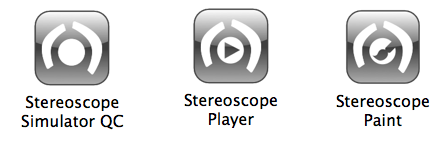
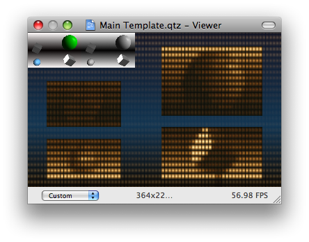
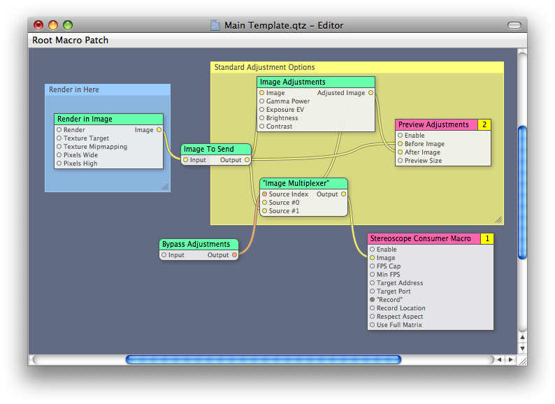
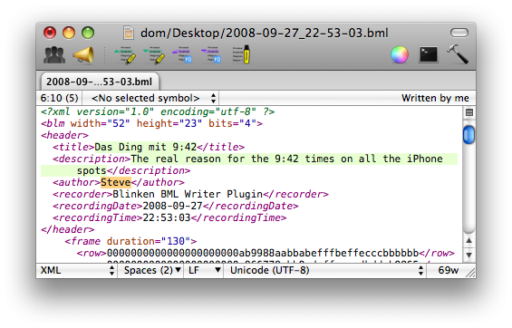

System Requirements
The Stereoscope Creation Tools require Mac OS X 10.5
To actually create content using Quartz Composer you have to download and install the freely available Apple Developer Tools (Xcode 3.1), after installation Quartz Composer.app can be found in /Developer/Applications/Quartz Composer.app and you are ready to go!
Installation
The Blinkenposer.plugin Project Blinkenlights Quartz Composer plugin needs to be installed to create content. The easiest way to do this is start Stereoscope Simulator QC and either choose install when asked at startup, or use the "Install Blinkenposer.plugin" menu entry in the Application Menu.
What is it?
The Stereoscope Creation Tools consist of 3 Applications and some Quartz Composer Templates.
- Stereoscope Simulator QC — a Quartz Composer based Simulator that shows an abstract version of the Toronto City hall and can receive, relay and most of all record a Blinkenlights Network Feed to a BML-File. BML is an XML based Movie format that can be played on a Blinkenlights installation.
- Stereoscope Player — a Java Application that can open and play movies in all flavors of the Blinkenlights format, including BML. It does not display anything on its own and needs a Stereoscope Simulator listening on localhost for display.
- Stereoscope Paint — a Director Application for creating and viewing pixel based Animations for the left and right top areas of the City hall. (e.g. 22x8 and 30x12 pixels). This App plays its movies directly and does not send out a network Feed.
How can I create content?
If you want to create Pixel based movies for the top-left or top-right screen then you can just start up Stereoscope Paint and go ahead pixeling. If you want to check your movies on the curved screen of the Stereoscope, you can load the created bml up in Stereoscope Player, and startup Stereoscope Simulator QC (make sure it points to localhost) to check your piece of art.
If you want to create content using Quartz Composer, then you need to install Apple's developer tools (or just take the Quartz Composer.app from someone who has the tools installed). You also need to have the Blinkenposer.plugin installed, which you are asked to at start of Stereoscope Simulator QC.
Now that you are ready to go, you open up one of the Templates found in Composition Templates, for the sake of this explanation let's take Main Template.qtz
In the viewer part of the Quartz composer you get a flat representation of the so called "Virtual Matrix" with the visible parts clearly shown. In the top left part you see two representations of the source image you are outputting on the Stereoscope, one before and one after the Standard Adjustment patch that is applied for Gamma, Exposure and Color correction.
Now let us look at the actual patches and spaghettis:
On the left side in the blue box there is the Render in Image patch. It is inside this patch where the actual scene is rendered. That is where you put your stuff in. If you have nice Compositions already, just copy and paste them into that patch and they are playing on the Stereoscope.
On top of the yellow sticky are the standard adjustments you can make. Play with the parameters for Gamma Power, Exposure EV, Brightness and contrast until the result is to your liking. If you want to quickly compare the output with and without the Adjustments, just switch the input of the Bypass Adjustments patch.
In the bottom right is the big bad macro patch that does the actual work converting your image to the screen, giving you the nice window preview, and sending it out to localhost:2323 - where you can look at it with a Stereoscope Simulator that is listening to lokalhost. And most important here: you can record the scene to a BML File by toggling the Record input on, and to stop off again. The BML File will be saved to your desktop and named with a current timestamp. e.g. 2008-09-27_23-41-25.bml.
Check your Recordings.
When you have created your BML files by toggling the Recording you can watch and check them again by loading them up in Stereoscope Player and having a Stereoscope Simulator running listening on localhost. If you didn't get the timing right you can rerecord your movie here by using the little red record button in the bottom right. If you do so another file will be written to your desktop, just as before.
When your satisfied with your piece of art don't forget to open up the bml in your favorite text editor and your metdata, at least tilte, description and author should be filled out. You can find out more about the supported fields at the BML webpage. 
Let us know!
Go to the project website and send us your creations.
What is more to say?
If you want some more detailed information about the Quartz Composer Patches in Blinkenposer.plugin, you can read a detailed documentation here
For a real easy creation and conversion just have a look at the iSight.qtz example and the Image and Movie Placement Template.qtz
For the ones with more Quartz Composer experience, or the wish for coding their Animations have a look at the Javascript Template.qtz. The Blinkensender can also consume a structure, consisting of rows of numbers ranging from 0 to 15.
That's all Folks
Looking forward to your creations. We also happily accept Quartz compositions directly as submissions. However the playtime for compositions might be restrained as we don't know yet how manual the quartz composotion playout has to be. The BML file play out will probably fill a bigger portion of the showtime